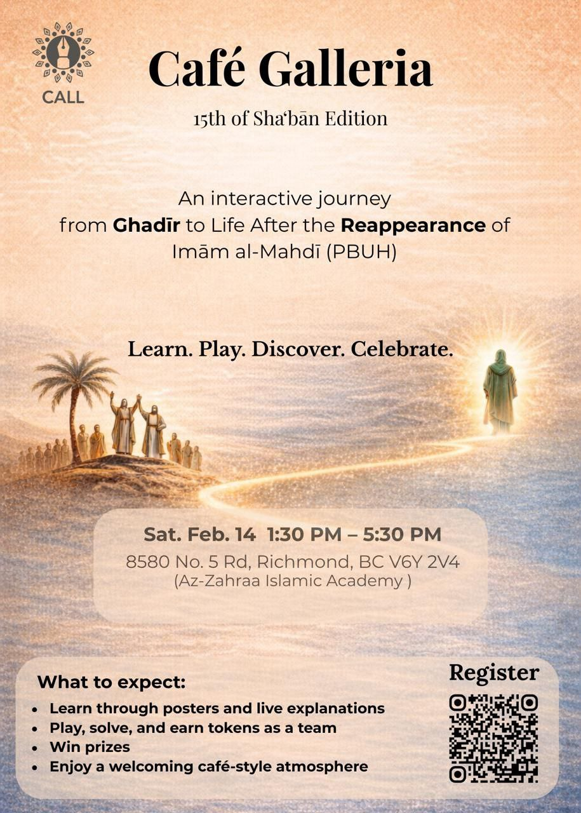

Explore how Judaism, Christianity, and Islam share a profound hope for a divinely guided era of justice, peace, and redemption — tracing the promise from ancient scriptures to living belief.
Throughout history, the great Abrahamic religions have spoken of a coming age when injustice ends and divine justice prevails. This study traces that shared expectation across sacred texts.
Beginning with Jewish prophecies, through Christian teachings about Jesus as the Messiah, and into Islam's understanding of Imam Mahdi, we discover a remarkable thread of continuity.
Navigate through the different dimensions of this interfaith exploration.
A comprehensive study tracing messianic expectations across Judaism, Christianity, and Islam — from ancient prophecy to shared hope.
Read the StudyA curated collection of passages from the Torah, Psalms, Prophets, Isaiah, Daniel, and the Quran — the textual foundation of the study.
View ReferencesA critical overview of the Báb’s life, evolving claims, and theological inconsistencies — presented by Taha.
ExploreA historical-critical analysis of New Testament eschatological texts and their interpretive challenges — presented by Ali.
Read AnalysisAn exploration of Imam Mahdi's role in conveying and establishing divine meaning — presented by Amirreza.
Read StudyThe promise of divine justice and the settling of every blood-right of the oppressed — presented by Alireza.
Explore JusticeHadith evidence on the divinely appointed successors and the Seal of the Imams — presented by Parsa.
Explore TraditionUnderstanding Imam Mahdi as the remaining Hujjah and the completion of divine guidance — presented by Baqer.
Discover TruthLearn about the purpose, methodology, and vision behind this interfaith study of shared eschatological expectations.
Learn MoreWidespread injustice preceding the final age
God's direct involvement to restore order
A divinely guided leader of justice
Lasting worldwide harmony and justice
Dive into the full study to discover how ancient prophecies speak to shared human hopes for a just and peaceful world.
